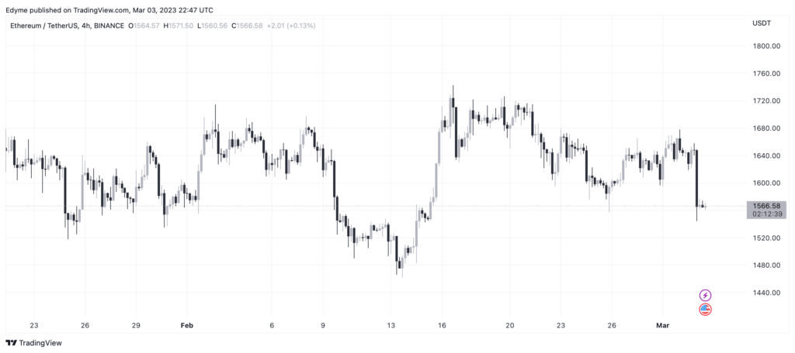
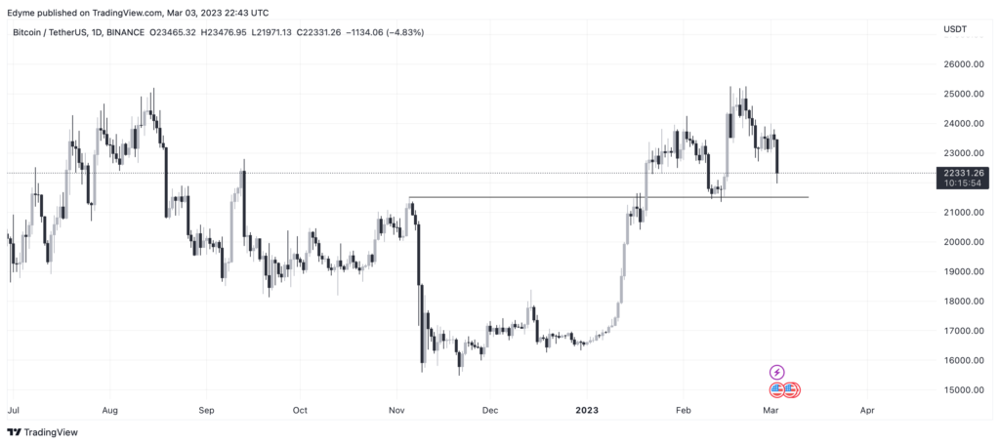

Найбільші цифрові валюти біткоїн (BTC) і ефір (ETH) за тиждень втратили у вартості понад 5% після того, як компанії почали зупиняти співпрацю із Silvergate.
Як уточнює Bloomberg, наприкінці минулого тижня біржа Coinbase та Digital Asset Capital оголосили про припинення партнерства з криптобанком.
Причиною такого рішення стали фінансові проблеми Silvergate. Галузеві ЗМІ повідомили, що банк, який входить до структури Silvergate Capital, знаходиться на межі банкрутства. Ця новина спровокувала масштабний вихід капіталу із криптосфери.
Біткоїн та ефір подешевшали до $22 215 та $1553.
  Зони підтримки на відмітках $23 000 і $1600 не спрацювали, і з’явилися ризики падіння провідних цифрових валют нижче за $22 000 і $1500. Обстановка стабілізувалася у вихідні, і в ніч на понеділок, 6 березня, BTC та ETH зміцнилися до $22 428 та $1569.
За даними платформи CoinGlass, відкритий інтерес до біткоїнів та ефіріум-ф’ючерсів знизився до $10,21 млрд і $5,697 млрд.
За оцінками аналітиків, підтримка BTC в районі $23 000 не спрацювала, оскільки тиск з боку продавців виявився дуже сильним після появи новин про проблеми Silvergate.
Однак, цифрова валюта зберігає шанси на повернення позицій вже цього тижня, якщо економічні дані зі США та Євросоюзу підігріють інтерес трейдерів до ризикових активів.